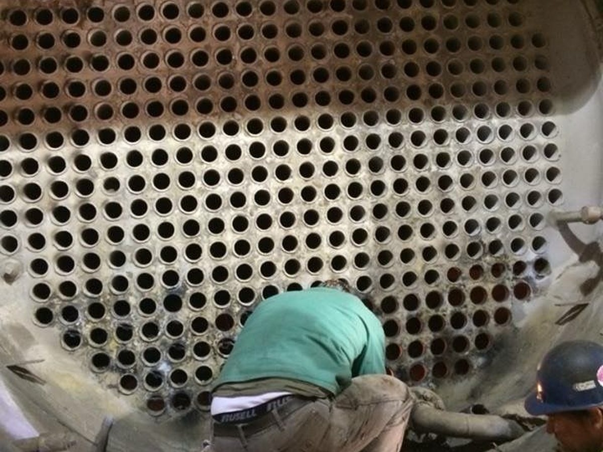

Interior & Selective Demolition
Removal of partitions, ceilings, finishes, fixtures, flooring, and non-structural components for renovations, reconfigurations, and tenant improvements.
Capabilities
Commercial and industrial demolition support designed for active sites, tight schedules, shutdown work, and the next phase of construction.
What we do
We work alongside owners, general contractors, facility teams, and trades to complete demolition, dismantling, and removal scopes cleanly and efficiently — while keeping communication direct and the worksite organized.
Removal of partitions, ceilings, finishes, fixtures, flooring, and non-structural components for renovations, reconfigurations, and tenant improvements.
Controlled dismantling of boilers, mechanical systems, process piping, and related infrastructure with careful sequencing and site control.
Removal of machinery, production equipment, conveyors, and facility components so the next phase can move forward efficiently.
Organized cutting, sorting, staging, and removal of piping, steel, and demolition debris for clean, efficient turnover.
Support for shutdowns, changeovers, and redevelopment scopes that require dependable coordination and disciplined execution.
Orderly material handling, cleanup, and load-out that leave the work area safer, cleaner, and ready for the next trade.

How we work
We understand the site, shutdown requirements, access, schedule, and demolition needs.
We coordinate the work sequence, safety approach, material handling, and logistics.
We complete the scope with consistent communication, disciplined execution, and clean turnover.
Need pricing?